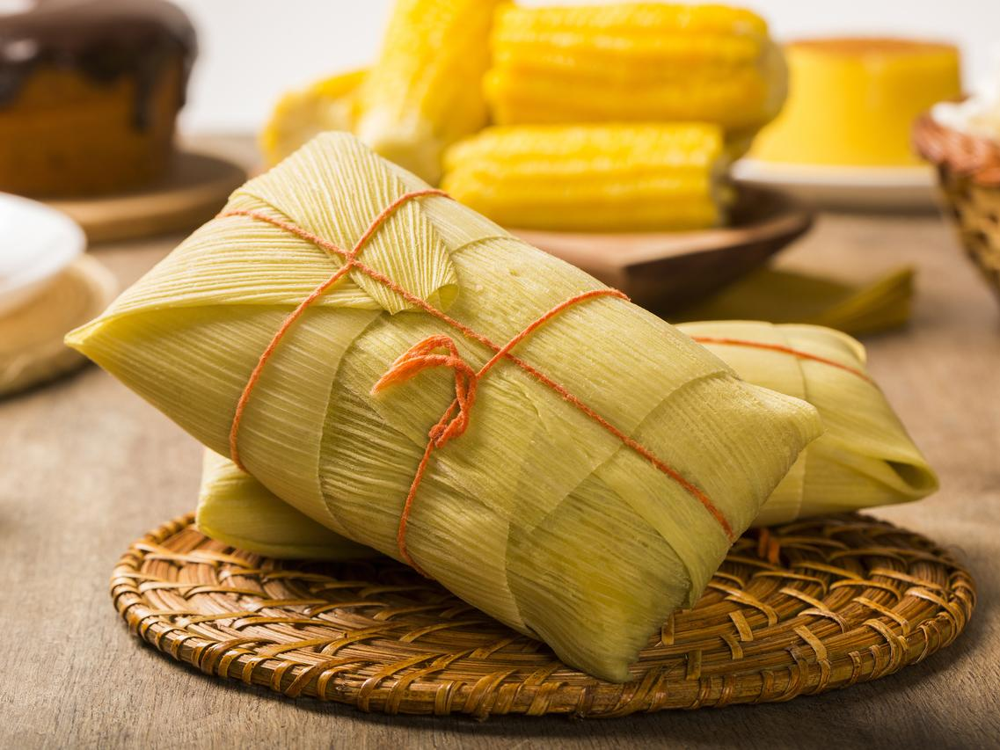

Pamonha

Corn-paste wrapped in husks
Pamonha is a traditional Brazilian dish that is made with freshly grated corn, made into a paste and tightly wrapped around a fresh husk of corn and then boiled or steamed to cook.
It comes in a variety of forms and flavours all over Brazil where it can either be plain, sweet, salty and also savoury (filled with meat or cheese). Here you are going to learn how to do it in a traditional way sweet or salty.
Sweet
Ingredients:
- 1 cup grated coconut
- 8 corncobs (with husks)
- 1 ½ cup sugar
- Pinch salt
Directions:
- Add water in a pan to boil.
- Remove the husks carefully and keep it.
- Clean the corncobs and let them stand. Clean the corn husks and deep into the hot water for 1 minute. Keep the husks and drain the water.
- Add water to the same pan to boil, enough to cover the pamonhas.
- Grate the corncobs and add in a bowl.
- Put grated coconut , sugar, salt and stir to combine.
Assembly:
- Use 2 husks, put one in front of another to make a tub, and use a string to keep it together and firm.
- Add the cream corn into the straw tub. You can use a funnel to help you.
- Close the tub with another bigger straw and string it, leaving some space to not leak.
- Add the pamonhas in hot boiling water and let cook for approximately 30 minutes.
- Remove the pamonhas and let it stand until it is warm.
Salty
Ingredients:
- 8 corncobs (with husks)
- 1 cup milk
- 2 tablespoon salt
- 1 tablespoon butter
- ¼ tablespoon sugar
Directions:
- Add water in a pan to boil.
- Remove the husks carefully and keep it.
- Clean the corncobs and let them stand. Clean the husks and deep into the hot water for 1 minute. Keep the husks and drain the water.
- Add water to the same pan to boil, enough to cover the pamonhas.
- Grate the corncobs and add in a bowl.
- Put milk , sugar, salt, and butter in the same bowl and stir to combine.
Assembly:
- Use 2 straws, put one in front of another to make a tub, and use a string to keep it together and firm.
- Add the cream corn into the straw tub. You can use a funnel to help you.
- Close the tub with another bigger straw and string it, leaving some space to not leak.
- Add the pamonhas in hot boiling water and let cook for approximately 1 hour.
- Remove the pamonhas and let it stand until it is warm.